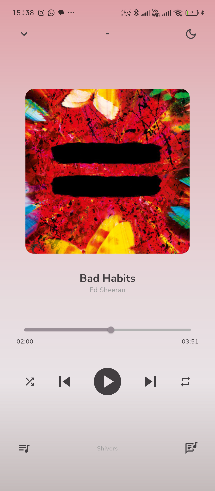
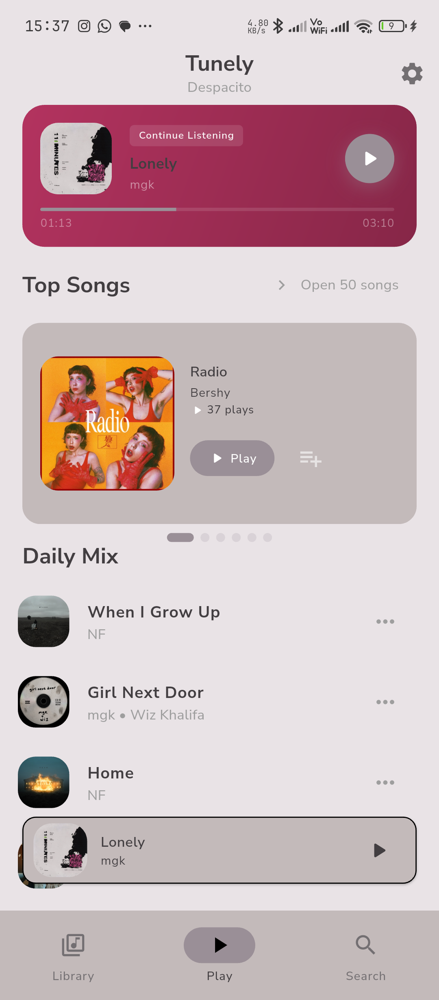
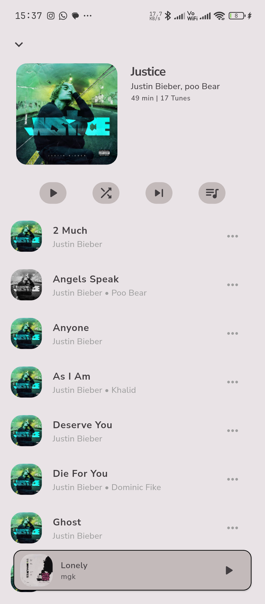
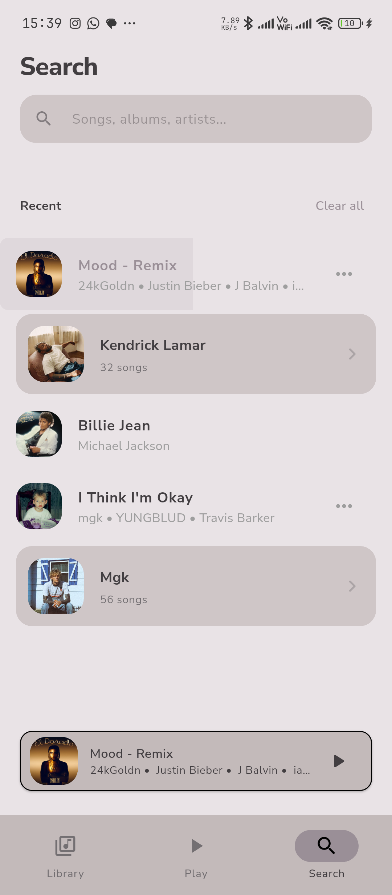
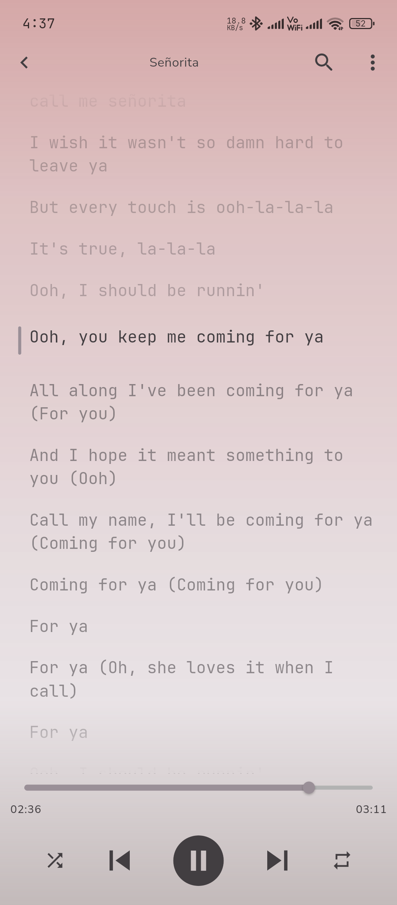
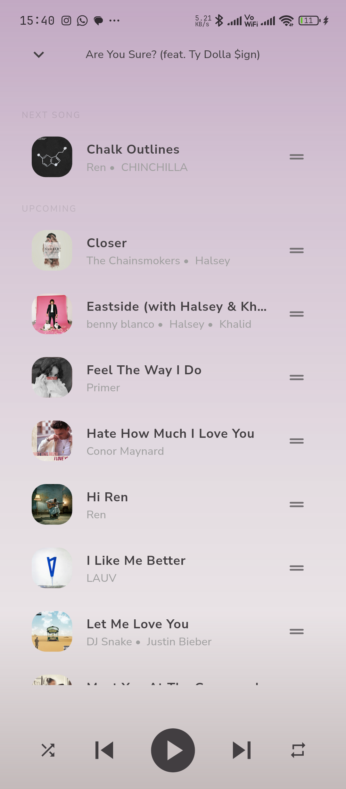
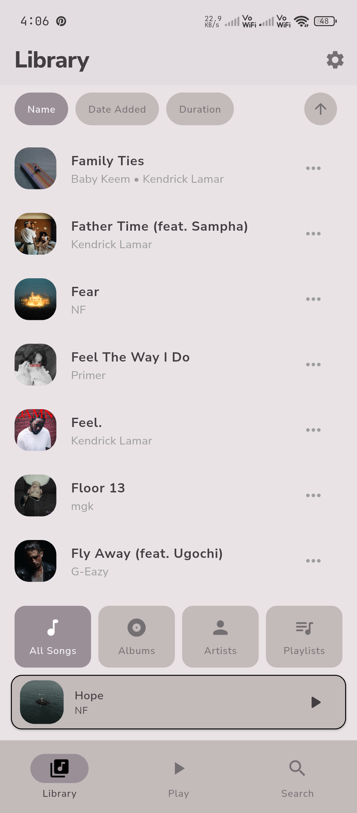
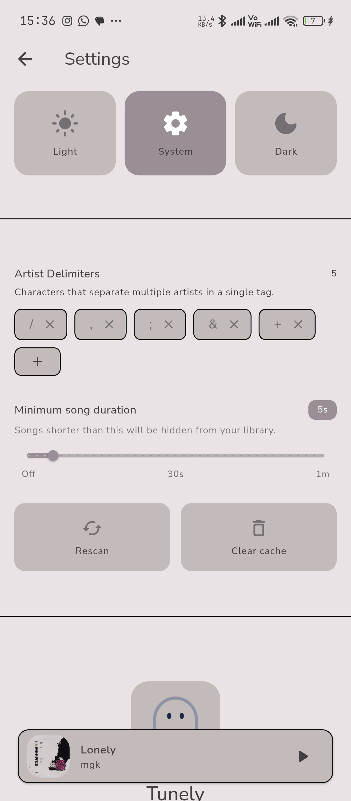

Offline playback
Plays straight from your device — no internet, no streaming, no interruptions.
Tunely is a local, offline-first music player for your own library. No internet, no ads, no tracking — just a fast, beautiful way to play the music you already own.

Tunely is built around one idea: your music belongs on your device, and playing it should feel instant.
Plays straight from your device — no internet, no streaming, no interruptions.
Privacy-respecting by design. Your listening habits never leave your phone.
A native Flutter app that launches instantly and sips battery on any device.
State management built on the BLoC pattern — predictable, testable, buttery smooth.







Free, ad-free, and offline-first. Download Tunely and play your library — wherever you are.